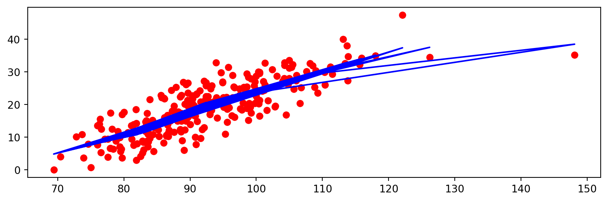

Mean squared error: 1.527203518390814
Mean absolute error: 0.48019660083734544
R2 score: 0.9781070874885559
Ejercicio
Selecciona un par de variables interesantes para poder dibujar el gráfico de la regresión lineal y observa el ajuste gráfico frente a las medidas de rendimiento obtenidas
Para dibujar un gráfico de ajuste con scatter plot puedes usar este código básico:
En Scikit Learn, la regresión polinomial se crea aplicando una transformación a los atributos, generando los nuevos atributos con los coeficientes del polinomio. A continuación, se realiza un ajuste de una regresión lineal.
from sklearn.preprocessing import PolynomialFeatures# Por defecto, PolynomialFeatures incluye el término independiente Bias a truepoly_reg = PolynomialFeatures(degree=3) #cuidado con el grado: el número de coeficientes crece exponencialmente con su valor de acuerdo a la matriz de VandermondeX_poly = poly_reg.fit_transform(X)# Ya tenemos las características transformadas, ahora entrenamos el modeloreg2 = LinearRegression()reg2.fit(X_poly,y) # Aquí es donde ajustamos los coefientes del modelo y reg2 se actualiza en consecuenciay_pred = reg2.predict(X_poly)print("Mean squared error: ", mean_squared_error(y, y_pred))print("Mean absolute error: ", mean_absolute_error(y, y_pred))print("R2 score: ", r2_score(y, y_pred))
Mean squared error: 1.0401528960752632e-21
Mean absolute error: 3.080810122004855e-11
R2 score: 1.0
Es posible crear un flujo completo de trabajo utilizando la función make_pipeline().
Esta función genera la transformación y la aplica al regresor (lineal en nuestro caso) en una única línea.
from sklearn.pipeline import make_pipelinereg3 = make_pipeline(PolynomialFeatures(degree=3), LinearRegression())reg3.fit(X,y) y_pred = reg3.predict(X) # Fíjate que utilizamos los datos sin transformar para realizar la predicción. El pipeline se encarga de realizar la transformaciónprint("Mean squared error: ", mean_squared_error(y, y_pred))print("Mean absolute error: ", mean_absolute_error(y, y_pred))print("R2 score: ", r2_score(y, y_pred))
Mean squared error: 1.0401528960752632e-21
Mean absolute error: 3.080810122004855e-11
R2 score: 1.0
Ejercicio
¿Por qué los valores de rendimiento mejoran cuando aumentamos el grado del ajuste polinomial? Pruebe a realizar una validación de training y test (mínimo un Hold-out) y observe de nuevo el efecto de aumentar el grado del polinomio.
Nota: Si utiliza particiones de entrenamiento y test, tendrá que aplicar el método fit_transform a los valores X tanto del conjunto de entrenamiento como del conjunto de test.
Regresión con Splines
En la regresión con splines se aplica la regresión polinómica “a trozos”: entre ciertos valores de los atributos de entrada (los nodos o “knots”) se genera el ajuste de un regresor polinómico. Esto supone crear una transformación como la que hemos visto para la regresión polinómica, pero la matriz de transformación es diferente ahora.
Además, hemos de elegir qué estimador polinómico queremos ajustar entre los nodos.
Para condensar el ejemplo, utilizaremos la función make_pipeline() de nuevo.
from sklearn.linear_model import LinearRegressionfrom sklearn.preprocessing import PolynomialFeatures, SplineTransformerspline = make_pipeline(SplineTransformer(n_knots=8, degree=6), LinearRegression()) #n_knots es el número de puntos de control y degree el grado del polinomiospline.fit(X, y)y_pred = spline.predict(X)print("Mean squared error: ", mean_squared_error(y, y_pred))print("Mean absolute error: ", mean_absolute_error(y, y_pred))print("R2 score: ", r2_score(y, y_pred))
Mean squared error: 0.1949048845351688
Mean absolute error: 0.2389555431547619
R2 score: 0.9972059810406424
Ejercicio
Observa el efecto del número de nodos o puntos de control y del grado en el rendimiento del algoritmo.
Experimenta con una validación adecuada (Hold-out o validación cruzada) y el uso del pipeline para realizar la validación.
Prueba a elegir un atributo de entrada para poder pintar con un plot el resultado del ajuste spline frente a la salida.
Regresión lineal a trozos (LOESS)
Actualmente, sklearn no incluye este modelo de regresión, aunque el paquete statmodels sí incluye una versión unidimensional.
La incluimos a continuación y mostramos un ejemplo de su utilización en nuestro conjunto para una de las características.
from statsmodels.api import nonparametricX_mono = X['Abdomen'] # La regresión linea a trozos sólo admite una variable independiente en statsmodelslowess_sm = nonparametric.lowessy_pred = lowess_sm(y,X_mono.to_numpy(),frac=1./3.,it=3, return_sorted =False)print("Mean squared error: ", mean_squared_error(y, y_pred))print("Mean absolute error: ", mean_absolute_error(y, y_pred))print("R2 score: ", r2_score(y, y_pred))plt.scatter(X['Abdomen'], y, color ='red')plt.plot(X['Abdomen'], y_pred, color ='blue')plt.show()
Mean squared error: 21.279077149942545
Mean absolute error: 3.716767301273681
R2 score: 0.694958157994011

Ejercicio
Se aprecia como la regresión “va y vuelve”. Intente solucionarlo ordenando los datos de entrada (X_mono).
Generalized Additive Models
De nuevo, sklearn no tiene una implementación nativa de GAMs. Es posible encontrar una buena biblioteca en https://pygam.readthedocs.io/en/latest/
La información para su instalación está en https://pygam.readthedocs.io/en/latest/notebooks/quick_start.html#Install-pyGAM
Recordemos que las GAMs permiten establecer linealidades o no linealidades en diferentes atributos a nuestra elección. PyGAM especifica esto en la creación del modelo.
from pygam import LinearGAM, s, f, l# Definimos el modelo utilizando las siguientes funciones:# 1. la función s para indicar que se ajustara una función spline a la variable independiente con el correspondiente índice# 2. En el caso de usar f, se aplicará un factor de ajuste a la variable independiente con el correspondiente índice# 3. En el caso de usar l, se aplicará un término lineal a la variable independiente con el correspondiente índice# Tenemos 14 atributos de entrada en nuestro conjunto, vamos a realizar un ajuste por cada uno de ellos de forma arbitrariagam = LinearGAM(s(0) + s(1) + f(2) + l(3) + l(4) + l(5) + l(6) + l(7) + l(8) + l(9) + l(10) + l(11) + l(12) + l(13))gam.fit(X, y)#Vamos a visualizar el modelogam.summary()
LinearGAM
=============================================== ==========================================================
Distribution: NormalDist Effective DoF: 92.6098
Link Function: IdentityLink Log Likelihood: -334.9558
Number of Samples: 252 AIC: 857.1311
AICc: 969.6719
GCV: 3.0667
Scale: 1.1429
Pseudo R-Squared: 0.9896
==========================================================================================================
Feature Function Lambda Rank EDoF P > x Sig. Code
================================= ==================== ============ ============ ============ ============
s(0) [0.6] 20 13.9 1.11e-16 ***
s(1) [0.6] 20 12.9 6.27e-02 .
f(2) [0.6] 197 64.9 1.53e-01
l(3) [0.6] 1 0.1 2.88e-01
l(4) [0.6] 1 0.1 8.60e-01
l(5) [0.6] 1 0.1 7.32e-02 .
l(6) [0.6] 1 0.1 3.31e-01
l(7) [0.6] 1 0.1 8.00e-01
l(8) [0.6] 1 0.1 4.46e-02 *
l(9) [0.6] 1 0.1 8.58e-01
l(10) [0.6] 1 0.1 2.93e-01
l(11) [0.6] 1 0.1 7.71e-01
l(12) [0.6] 1 0.1 4.83e-01
l(13) [0.6] 1 0.0 8.77e-01
intercept 1 0.0 8.34e-14 ***
==========================================================================================================
Significance codes: 0 '***' 0.001 '**' 0.01 '*' 0.05 '.' 0.1 ' ' 1
WARNING: Fitting splines and a linear function to a feature introduces a model identifiability problem
which can cause p-values to appear significant when they are not.
WARNING: p-values calculated in this manner behave correctly for un-penalized models or models with
known smoothing parameters, but when smoothing parameters have been estimated, the p-values
are typically lower than they should be, meaning that the tests reject the null too readily.
Mean squared error: 0.7228584994869764
Mean absolute error: 0.38610795714602486
R2 score: 0.989637610379462
Ejercicios
Observe los p-values devueltos por el summary() de nuestra GAM. Aquellos valores más bajos dan pistas de los atributos más importantes. Prueve a variar el ajuste utilizado para esos atributos.
Pruebe a ajustar los parámetros de regularización con el método gridsearch() (más info en https://pygam.readthedocs.io/en/latest/notebooks/quick_start.html#Automatically-tune-the-model)
Mean squared error: 4.980196662455605e+28
Mean absolute error: 221866626764848.4
R2 score: -7.139258684776369e+26
Los resultados obtenidos en el bloque de código anterior son muy pobres.
Vamos a normalizar los datos para que tengan media 0 y desviación típica 1, ya que el uso de SGD sin normalizar los datos puede provocar que el modelo no converja
Mean squared error: 2.263134801441148
Mean absolute error: 1.026306982309168
R2 score: 0.9675572956630156
Ejercicios
Pruebe diferentes parámetros max_iter, tol, alpha y eta de SGDRegressor y observe el comportamiento del regresor.
Es muy habitual realizar el escalado y el fit() del SGDRegressor. SKlearn proporciona un pipeline para juntar las dos tareas. Examine la documentación de https://scikit-learn.org/stable/modules/generated/sklearn.linear_model.SGDRegressor.html y aplique el método make_pipeline al ejemplo anterior
Ridge Regression
Ridge regression es un método de regresión múltiple en escenarios en los que las variables independientes (de entrada) están muy correlacionadas. Resulta especialmente útil para mitigar el problema de la multicolinealidad en la regresión lineal, que suele darse en modelos con un gran número de parámetros.
Mean squared error: 16.085521192268324
Mean absolute error: 3.298424337773154
R2 score: 0.7694093132168962
Ejercicios
Intente obtener el mismo comportamiento que el regresor lineal con el Ridge regressor
De igual forma, es posible emular el comportamiento del Ridge regressor mediante el regresor SGD. Revise las transparencias de teoría e intente obtener dicha equivalencia.
Lasso regression
Lasso se introdujo para mejorar la precisión de las predicciones y la interpretabilidad de los modelos de regresión. Realiza una selección de un subconjunto de las covariables conocidas para su uso en un modelo.
Previamente, Ridge regression era la técnica más popular para mejorar la precisión de las predicciones. Como hemos visto antes, Ridge Regression mejora el error de predicción reduciendo la suma de los cuadrados de los coeficientes de regresión para que sea inferior a un valor fijo con el fin de reducir el sobreajuste, pero no realiza la selección de covariables y, por lo tanto, no ayuda a que el modelo sea más interpretable.
Lasso logra ambos objetivos al forzar la suma del valor absoluto de los coeficientes de regresión a ser inferior a un valor fijo, lo que fuerza a ciertos coeficientes a cero, excluyéndolos del impacto en la predicción. Esta idea es similar a la de Ridge regression, que también reduce el tamaño de los coeficientes; sin embargo, Ridge regression no pone los coeficientes a cero (y, por tanto, no realiza la selección de variables).
Mean squared error: 18.78290910127443
Mean absolute error: 3.537901971106999
R2 score: 0.7307414626061789
Ejercicios
Tal y como ocurría con el Ridge regressor, puede emular el comportamiento del Ridge regressor mediante el regresor SGD. Revise las transparencias de teoría e intente obtener dicha equivalencia.
Observe los coeficientes del ajuste del regresor Lasso con el método .coef_ e identifique los atributos menos importantes.
Con la información del punto 2, podría eliminar los atributos con un peso de cero del conjunto y mejorar el rendimiento (velocidad) de ajuste del modelo sin afectar apenas al rendimiento. Pruébelo.
Elastic Net
El método Elastic Net supera las limitaciones de LASSO. La regularización de LASSO tiene varias limitaciones. Por ejemplo, en el caso “p grande, n pequeño” (datos de alta dimensión con pocos ejemplos), LASSO selecciona como máximo n variables antes de saturarse. Además, si hay un grupo de variables muy correlacionadas, LASSO tiende a seleccionar una variable del grupo e ignorar las demás. Para superar estas limitaciones, la red elástica añade una parte cuadrática \(( ||\beta||^2)\) a la penalización, que corresponde a la penalización de Ridge Regression.
El término de penalización cuadrática añadido hace que la función de pérdida sea fuertemente convexa y, por tanto, tiene un mínimo único. El método de Elastic Net, por tanto, incluye tanto a LASSO como a Ridge Regression: en otras palabras, estos últimos son un caso especial en el que \(\lambda_1 = \lambda, \lambda_2 = 0\) o \(\lambda_1 = 0, \lambda_2 = \lambda\) dada la regularización de Elastic Net: \[ \hat{\beta} = \underset{\beta}{\mathrm{argmin}} (||y - X\beta||^2 + \lambda_2||\beta||^2 + \lambda_1||\beta||) \]
Mean squared error: 18.13871712209908
Mean absolute error: 3.477151372336551
R2 score: 0.7399761444745917
Ejercicios
Dado que Elastic Net es una “combinación” de Lasso y Ridge, pruebe a modificar el parámetro l1_ratio para emular el comportamiento obtenido en los dos modelos mencionados.
Observe también como cambian los coeficientes del ajuste de Elastic Net cuando modifica el l1_ratio.
Regresión mediante mínimos cuadrados parciales (PLS regression)
En https://scikit-learn.org/stable/modules/cross_decomposition.html es posible leer las diferentes versiones de este algoritmo. El algoritmo base es PLSCanonical, y el resto de versiones realizan modificaciones al algoritmo base para ganar eficiencia o aplicar regularizaciones.
A diferencia de lo visto en teoría, no vamos a realizar la regresión de PCA+Linear regression y nos centraremos en PLS directamente. Esperaremos a la práctica de preprocesamiento para aprender cómo aplicar PCA en nuestros datos. En cualquier caso, si tienes curiosidad, este tema está tratado en sklearn directamente: https://scikit-learn.org/stable/auto_examples/cross_decomposition/plot_pcr_vs_pls.html
PLS Canonical
from sklearn.cross_decomposition import PLSCanonical#n_components es el número de componentes principales a utilizarpls = PLSCanonical(n_components=1, tol=0.001, max_iter=5000) pls.fit(X, y)y_pred = pls.predict(X)print("Mean squared error: ", mean_squared_error(y, y_pred))print("Mean absolute error: ", mean_absolute_error(y, y_pred))print("R2 score: ", r2_score(y, y_pred))
Mean squared error: 301.69378671386943
Mean absolute error: 13.576250276918339
R2 score: -3.32486934336855
PLS regression
Permite hacer regresión de una variable (PLS1 con n_components=1) o varios (PLS2 con n_components > 1). A diferencia de PLSCanonical, el número de componentes no está limitado por el número de atributos de salida. Se encuentra en el mínimo de \([1, min(\#atributos, \#ejemplos)]\)
from sklearn.cross_decomposition import PLSRegression#n_components es el número de componentes principales a utilizar#prueba a aumentar el número de componentes y observa como cambia el errorpls = PLSRegression(n_components=2, tol=0.001, max_iter=5000) pls.fit(X, y)y_pred = pls.predict(X)print("Mean squared error: ", mean_squared_error(y, y_pred))print("Mean absolute error: ", mean_absolute_error(y, y_pred))print("R2 score: ", r2_score(y, y_pred))
Mean squared error: 8.328809619946016
Mean absolute error: 2.2654707764796984
R2 score: 0.8806040595518779
Ejercicios
Con la experiencia de estos dos métodos, prueba a ajustar con PLSSVD los datos: https://scikit-learn.org/stable/modules/generated/sklearn.cross_decomposition.PLSSVD.html#sklearn.cross_decomposition.PLSSVD
¿Cuál es el efecto del número de componentes en PLSRegression en el rendimiento? ¿Hay alguna asíntota de rendimiento?
¿Qué ocurre con los coeficientes al aumentar el número de componentes?
Prueba a aplicar algún tipo de estandarízación en los datos y observa las diferencias en rendimiento.
Iteration 1, loss = 680.09453479
Iteration 2, loss = 270.82359745
Iteration 3, loss = 199.98164983
Iteration 4, loss = 190.55066669
Iteration 5, loss = 178.70264099
Iteration 6, loss = 163.41529596
Iteration 7, loss = 143.65324612
Iteration 8, loss = 119.59976569
Iteration 9, loss = 93.03300673
Iteration 10, loss = 67.47757320
Iteration 11, loss = 46.92496448
Iteration 12, loss = 36.45189176
Iteration 13, loss = 35.78870571
Iteration 14, loss = 40.65504252
Iteration 15, loss = 45.12825288
Iteration 16, loss = 45.79304255
Iteration 17, loss = 42.92700037
Iteration 18, loss = 39.38271242
Iteration 19, loss = 36.50136592
Iteration 20, loss = 35.18741262
Iteration 21, loss = 34.85291575
Iteration 22, loss = 35.17938944
Iteration 23, loss = 35.55177131
Iteration 24, loss = 35.84514861
Iteration 25, loss = 35.83443102
Iteration 26, loss = 35.67468121
Iteration 27, loss = 35.40266195
Iteration 28, loss = 35.19107489
Iteration 29, loss = 34.94287865
Iteration 30, loss = 34.88584148
Iteration 31, loss = 34.89394710
Iteration 32, loss = 34.98919233
Training loss did not improve more than tol=0.000100 for 10 consecutive epochs. Stopping.
Mean squared error: 69.92776595830891
Mean absolute error: 6.865490357056633
R2 score: -0.0024351331112046903
Ejercicios
Cambia la topología de la red (la cantidad de capas ocultas y el número de neuronas) para intentar mejorar los resultados
Puedes ajustar el resto de parámetros (info en https://scikit-learn.org/stable/modules/generated/sklearn.neural_network.MLPRegressor.html) para intentar conseguir mejorar los resultados.
Juega con el learning_rate frente al número de iteraciones y los resultados. Cambiar el solver también tiene un impacto importante en la velocidad de convergencia.
MLP con Keras
Aunque en asignaturas más avanzadas se trabajará con Keras de forma más profunda, aprovechamos aquí para hacer un pequeño inciso.
En Keras, la construcción de la topología de la red para obtener una MLP se hace artesanalmente, añadiendo capas de izquierda a derecha (utilizando un modelo Sequential), comenzando por la primera capa de conexión con los atributos del dataset y terminando con la última neurona de salida.
Para facilitar la tarea vamos a utilizar un wrapper que incorpora Sklearn para trabajar con Keras de la misma forma que hemos hecho con los algoritmos de regresión previos. Queda como tarea al alumno replicar el uso de Keras directamente mostrado en las transparencias de teoría.
!pip install scikeras
Requirement already satisfied: scikeras in c:\users\julian\anaconda3\lib\site-packages (0.12.0)
Requirement already satisfied: packaging>=0.21 in c:\users\julian\anaconda3\lib\site-packages (from scikeras) (23.0)
Requirement already satisfied: scikit-learn>=1.0.0 in c:\users\julian\anaconda3\lib\site-packages (from scikeras) (1.3.0)
Requirement already satisfied: tensorflow-io-gcs-filesystem<0.32,>=0.23.1 in c:\users\julian\anaconda3\lib\site-packages (from scikeras) (0.31.0)
Requirement already satisfied: numpy>=1.17.3 in c:\users\julian\anaconda3\lib\site-packages (from scikit-learn>=1.0.0->scikeras) (1.25.0)
Requirement already satisfied: scipy>=1.5.0 in c:\users\julian\anaconda3\lib\site-packages (from scikit-learn>=1.0.0->scikeras) (1.11.1)
Requirement already satisfied: joblib>=1.1.1 in c:\users\julian\anaconda3\lib\site-packages (from scikit-learn>=1.0.0->scikeras) (1.2.0)
Requirement already satisfied: threadpoolctl>=2.0.0 in c:\users\julian\anaconda3\lib\site-packages (from scikit-learn>=1.0.0->scikeras) (2.2.0)
from tensorflow import kerasfrom tensorflow.keras import modelsfrom tensorflow.keras.models import Sequentialfrom tensorflow.keras.layers import Densefrom scikeras.wrappers import KerasRegressor#vamos a definir la topología del modelo MLP igual al ejemplo con MLPRegressor (2 capas ocultas de 10 neuronas cada una)def mlp(): model = Sequential() model.add(Dense(10, input_dim=len(X.columns), activation='relu')) #capa de entrada con input_dim = número de atributos de nuestro conjunto de datos model.add(Dense(10, activation='relu')) model.add(Dense(1, activation='linear')) model.compile(loss='mean_squared_error', optimizer='adam', metrics=['mse']) #para regresión usamos mean_squared_error como función de pérdidareturn model""""#Alternativamente, podemos definir la topología del modelo MLP como un vector de capas directamente en lugar de usar el método addmlp = models.Sequential( [ keras.layers.Dense(10, activation="relu", input_shape=len(X.columns)), keras.layers.Dense(10, activation="relu"), keras.layers.Dense(1) ])mlp.compile(loss="mse", optimizer="adam", metrics=["mse"])mlp.summary()"""
'"\n#Alternativamente, podemos definir la topología del modelo MLP como un vector de capas directamente en lugar de usar el método add\nmlp = models.Sequential(\n [\n keras.layers.Dense(10, activation="relu", input_shape=len(X.columns)),\n keras.layers.Dense(10, activation="relu"),\n keras.layers.Dense(1)\n ]\n)\nmlp.compile(loss="mse", optimizer="adam", metrics=["mse"])\n\nmlp.summary()\n'
Ahora podemos utilizar KerasRegressor para crear el modelo y ajustarlo a los datos.
Dese cuenta que no hemos aplicado ningún tipo de validación en los modelos. Estamos ajustando y evaluando el rendimiento en el conjunto completo, lo que no es nada recomendable. Queda en manos del estudiante aplicar los conocimientos de particionamiento y validación a los diferentes modelos aquí mostrados.
De igual forma, no se ha realizado normalización en la mayoría de casos, lo que es muy recomendable (sobre todo trabajando con SGD). En la sesión de preprocesamiento se tratará con mayor profundidad, pero es necesario dejar constancia de este hecho.
Finalmente, queremos indicar al estudiante que el ajuste de parámetros manual no es lo más óptimo hoy día. Más adelante estudiaremos como ajustar los parámetros de forma automatizada.